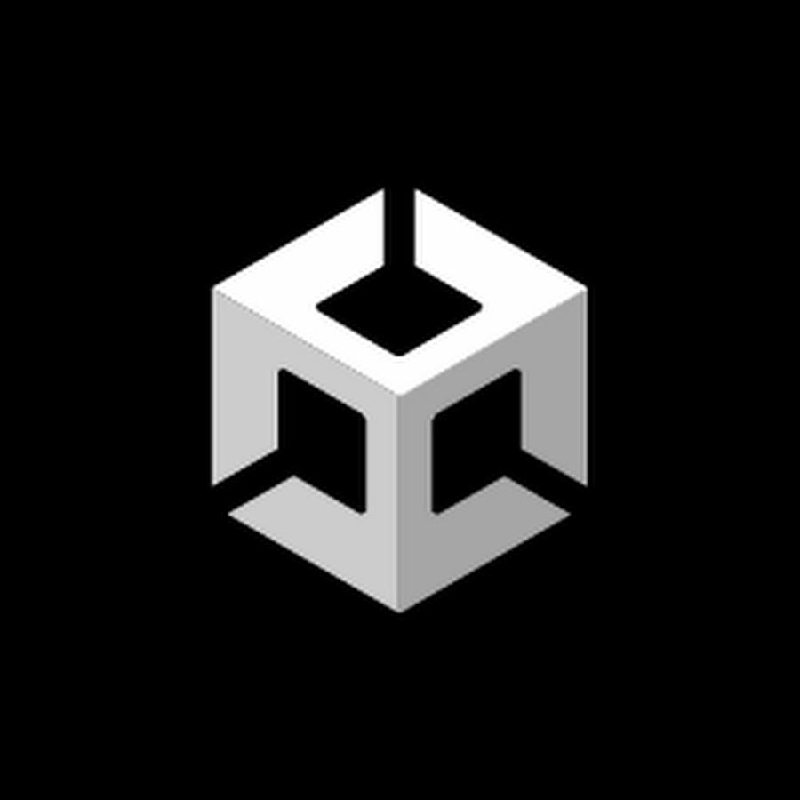
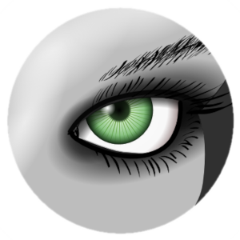
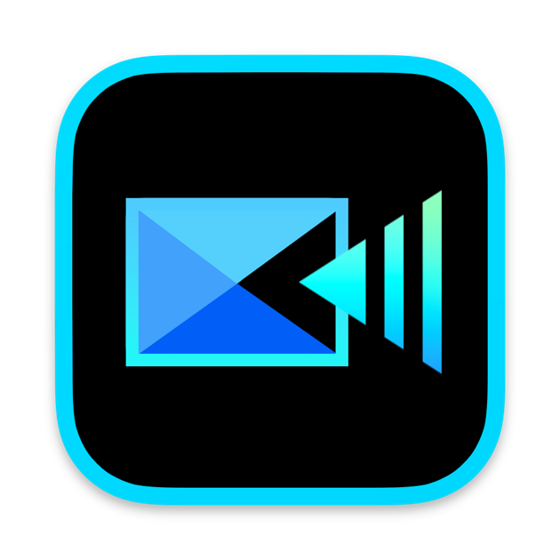

Tomohisa Koriyamaのポートフォリオへようこそ
経歴
・平成31年 鹿児島県立鶴丸高等学校 卒業
・令和 6年 鹿児島大学 工学部 先進工学科 卒業
・令和 6年 鹿児島大学大学院 理工学研究科 工学専攻 入学
・ 現在 鹿児島大学 大学院 理工学研究科 工学専攻 王研究室所属
研究・作品集
空間情報処理とEEGの相関に関する研究
私の研究は，VRゴーグルをはじめとした様々なディスプレイを用いて視覚刺激を得た時の没入感・臨場感を 定量的に評価するための手掛かりを得ることを目的として始められました． VRゴーグルや平面モニターを用いて被験者に様々な空間視覚刺激を提示し，それの視聴時・空間内での操作時における 脳波を測定・解析しました。
Fig.1 実際にVRゴーグルを装着し，脳波測定を行っている様子 Fig.2 実際に測定した前頭葉付近の脳波
これにより，私たちの脳はVRゴーグル装着時に平面モニター視聴時と比べて多くの空間に関する情報処理を行っている可能性が高いことが分かり， 没入感の評価に関する手掛かりとして「空間情報処理」に注目しました． 加えて被験者に複数の迷路課題を探索させる別の実験結果から，脳内で処理する空間情報量について，空間におけるテクスチャの有無が影響を与える可能性を発見しました。
研究の過程等，より詳しい内容はこちらをご覧ください。
VR迷路
上記の研究で被験者に提示する空間課題として，VRゴーグルを用いて探索する迷路空間を作成しました． 迷路空間はUnityを用いて作成し，MetaQuest2を用いて操作することができるようになっています。
工夫点や課題等，より詳しい内容はこちらをご覧ください。
＜鋭意制作中！＞研究室VR化計画
あらたな実験に用いること等を目的として，所属する研究室のゼミ室をVR空間として可能な限り忠実に再現する作業に取り組んでおります。 LiDARを用いて研究室をスキャンし3D空間として出力したものをVR空間として再現できるように調整しています。
より詳しい内容はこちらをご覧ください。
スキル
上から順に，習熟度が高いものを掲載しています。

Frontend


・HTML&CSS：ポートフォリオ等Webアプリのコーディング・デザイン ・JavaScript：大学で学習。

BackEnd


・C/C++：大学で学習。簡易的なシステム開発 ・C#：Unityの空間内における操作・視界管理 ・Java：大学で学習。カレンダーアプリ等のWebアプリ開発 ・Python：大学で学習。自然言語処理や画像情報処理システム，数独を解くAI開発 ・R：卒業論文，修士論文の研究で使用。脳波スペクトラム値の検定に使用

Tool & その他
- 
- 
- 
・Unity：研究・実験で用いる空間開発（詳しくは研究・作品集のVR迷路を参照） ・MeshLab：LiDARを用いてスキャンした3D空間の編集 ・Unreal Engine：簡易的な空間開発 ・CyberLink PowerDirector 365：動画編集
興味のある分野
VRゴーグル等のディスプレイが与える空間映像や没入度の高い映像の表現方法，それらの視覚刺激を得た際に脳内で起こる生理的な反応・現象に興味があります。